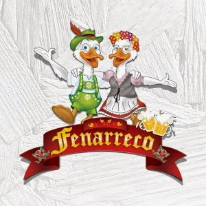

Fenarreco
Brusque SC

Festa Nacional do Marreco, nasceu em 1985, inspirada na criação da Oktoberfest, de Blumenau, para atender aos inúmeros turistas que chegavam à cidade à procura da carne de pato. O marreco tornou-se tradicional depois que os clubes começaram a adotá-lo entre as opções gastronômicas servidas durante festas e eventos sociais. O costume do uso da carne do marreco foi trazido pelos imigrantes alemães, que no continente europeu utilizavam o ganso como o principal prato na ceia natalina.
História
festival alemão

Origem
A Festa Nacional do Marreco (Fenarreco) é uma festa de tradição alemã realizada anualmente no mês de outubro no município de Brusque, no estado brasileiro de Santa Catarina. Foi criada em 1986 e sua edição de 2009 recebeu mais de 100 mil visitantes.